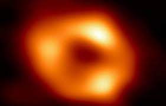

Sagittarius A, buraco negro no centro da Via Láctea.

Acima está a primeira imagem real do buraco negro no centro da Via Láctea,
captada por telescópios espalhados pelo mundo inteiro.
Essa foto do é incrível por:
- Precisou de anos de estudo para conseguir-la;
- Está a 25.640 anos-luz de distância da terra;
- Telescópios do mundo inteiro apontaram pra ele para conseguir tirar a foto.
Fonte oficial da NASA
Página de teste 1